|
Some Typical Cases |

  
|
|
Some Typical Cases |
|
Since integration by parts is a fundamental mathematical operation, it will come as no surprise that its application can lead to many of the fundamental rules of physics, such as Ampere's Law.
For this reason, the Natural boundary condition is frequently a statement of very fundamental conservation laws in many applications.
But it is not always obvious at first what its meaning might be in equations which are more elaborate than the Laplace equation.
So let us first list some basic terms and their associated natural boundary condition contributions (we present these rules for two-dimensional geometry, but the three-dimensional extensions are readily seen).
| • | Applied to the term 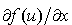, integration by parts yields |
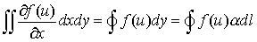
Here 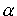 is the x-direction cosine of the surface normal and 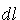 is the differential path length. Since FlexPDE applies integration by parts only to second order terms, this rule is applied only if the function 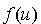 contains further derivatives of 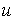. Similar rules apply to derivatives with respect to other coordinates.
| • | Applied to the term 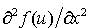, integration by parts yields |
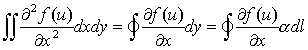
Since this term is second order, it will always result in a contribution to the natural boundary condition.
| • | Applied to the term 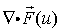, integration by parts yields the Divergence Theorem |
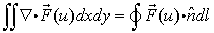
Here 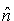 is the outward surface normal unit vector.
As with the x-derivative case, integration by parts will not be applied unless the vector 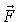 itself contains further derivatives of u.
| • | Applied to the term 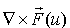, integration by parts yields the Curl Theorem |

Using these formulas, we can examine what the natural boundary condition means in several common cases:
The Heat Equation
Div(-k*grad(Temp)) + Source = 0
Natural(Temp) = normal(-k*grad(Temp)) { outward surface-normal flux }
(Notice that we have written the PDE in terms of heat flux with the negative sign imbedded in the equation. If the sign is left out, the sign of the Natural is reversed as well.)
One-dimensional heat equation
dx(-k*dx(Temp)) + Source = 0
Natural(Temp) = outward surface-normal component of flux = (-k*dx(temp)*nx),
where nx is the x-direction cosine of the surface normal.
Similar forms apply for other coordinates.
Magnetic Field Equation
curl(curl(A)/mu) = J
Natural(A) = tangential component of H = tangential(curl(A)/mu)
Convection Equation
dx(u)-dy(u)=0
Natural(u) is undefined, because there are no second-order terms.
See the section "Hyperbolic systems" for further discussion.
Page url: index.html?sometypicalcases.html